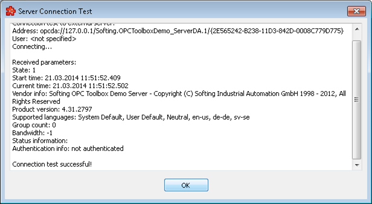
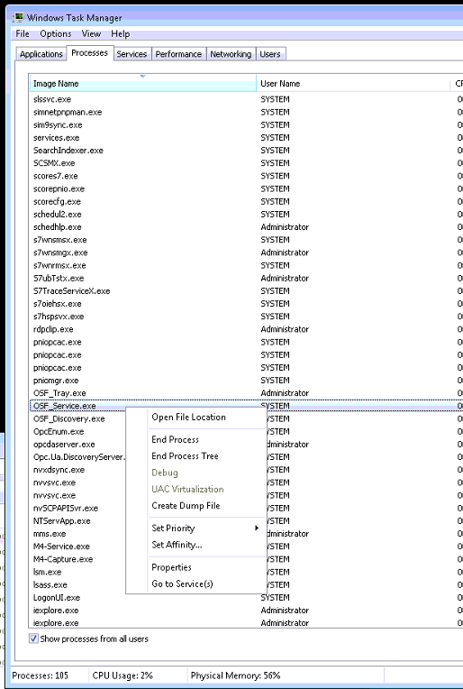

How To – Set Up the Bridge Software to Connect to the OPC Server
This How To provides the steps required to set up the bridge software to connect to the OPC Server.
Setting up the Bridge Software to Connect to the OPC Server
Softing OPC Easy Connect software is used to translate OPC-DA communication protocol to OPC-XML-DA. It is required for the OPC Subsystem to communicate with devices using only the OPC-DA communication protocol. The bridge software must be configured independently to communicate with the OPC server.
For further information on how to configure the bridge software, see the help feature in the Softing OPC Easy Connect software.
The softing OPC Easy Connect software is installed on the RTD 2 computer only. It is used to connect to the Throttle System.
This section has the following procedures:
Creating and Configuring Connections (Data Sources) to External Servers
To create and configure connections (data sources) to external servers:
- From the Windows Task Bar on the RTD 4 Computer, select the OPC System Tray icon . The Softing OPC Easy Connect Configuration Window is displayed.
Softing OPC Connect has been configured to run automatically at computer start-up. It can also be launched via the Start, Programs menus.
- From the Side Panel, select Data Source and then OPC Server.
- Click on the Add new data source icon.
The OPC Server Wizard is displayed.
- Click Next.
The Settings window is displayed.

- Enter the Data source name (In this example OPC_1).
This name is used only to identify the instance of the data source connection. It has no connection to the proDAS configuration.
- Enable the OPC DA Server radio button.
- Click Next.
The OPC Server window is displayed.
- From the tree structure in the Found OPC Servers pane, select the newly created OPC server connection (In this example Softing OPC Toolbox Demo OPC DA Server).
- Click Next.
The Authentication window displayed.
- Click on the Connection Test icon to test the server connection.
The connection test is performed. If the server returns some information, the connection to the OPC server through the bridge software is successful.

- Click OK.
- Click Next.
The Filter window is displayed.
- Enable the Activate Filter radio button and select the Display data items of Type 'Property' check box.
- Click Next.
The Filter Items window is displayed.
- Select the desired filter items and click Finish.
The Data Source - OPC Server window is displayed.
- From the Side Panel, select Settings and then Diagnostics.
The Diagnostics window is displayed.
- Deselect the Trace to File check box.
- From the Configuration menu, select Save.
The newly created OPC server connection is saved.
Starting the Bridge Software
The connection being made is to the OPC Server. It has no connection to the proDAS configuration.
To start the Bridge Software:
- From the Windows Task Bar, select the OPC System Tray icon .
The Softing OPC Easy Connect Configuration Window is displayed.
- From the External OPC Servers pane, select the desired OPC server.
- From the Local Application menu, select Start.
Exporting a Tag List/Filter File
To export a Tag List/Filter File:
- From the Data Source - OPC Server window, select the connection that you want to export.
- Click on the Filter Data Items icon.
The Filter Items window is displayed.
- Select the desired filter items.
- Click on the Export to File icon.
The Filter Export Wizard window is displayed.
- Enter the file name and storage location in the file field.
Save the connection to a place where it can be located easily. It has to be imported into the proDAS OPC Subsystem. For details, see Configuring the OPC Server.
- Click Next.
The connection is exported and saved.
Loss of Communication with the OPC Devices
proDAS is not able to communicate with the device using the OPC DA communication protocol, if:
- the connection is lost between the OPC Easy Connect Instance and the applicable devices
- the connection is lost between proDAS and Softing Easy Connect
- the OPC server for the applicable devices is no longer functional
- Softing Easy Connect is no longer functional
This section focuses on resolving the last last two issues in the list above as the occurrence of the first two issues is rare after proper integration and is usually the result of damaged cables.
Confirming the OPC Connection Status
To confirm the OPC Easy Connect Instance is connected:
- On the computer hosting the Softing Bridge Software, check that the OPC Easy Connect icon in the bottom right corner of the screen is green.
| OPC Easy Connect Instance Connected |
Issue with OPC Easy Connect Connection |
OPC Easy Connect Instance is Not Connected |
|
|
|
In situations where there is more than one OPC Easy Connect Instance, if one of the Instances is connected, the OPC icon appears red (not connected) if one of the other OPC Instances is connected.
If the OPC Easy Connect Icon is not green, refer to To start an OPC Easy Connect Instance.
If the OPC Easy Connect icon is green, refer to To stop an OPC Easy Connect Instance and then To start an OPC Easy Connect Instance to restart the OPC Easy Connect Instance.
Connection issues should be logged and reported to MDS.
Restarting an OPC Easy Connect Instance
To stop an OPC Easy Connect Instance:
- On the computer hosting the Softing Bridge Software, right-click on the OPC Easy Connect icon . (If there is only one configuration, simply left-click on the OPC Easy Connect icon.)
- Select the desired OPC connection (in this example Easy Connect - Configuration2).
- Select Open Softing Easy Connect - Configuration2 Tray.
- Select Stop.
- Confirm the selected OPC Easy Connect Instance has stopped.
If the State field still shows "Running" after 30 seconds, proceed to the next step; otherwise, skip to Step 10.
- Click on the Windows Start button and type "taskmgr" and press the Enter key.
- Find the OSF_Service.exe and right-click click on it.

- Select "End Process" to stop the Easy Connect process.
- Confirm the selected OPC Easy Connect Instance has stopped.
You have the option of waiting for proDAS to report the loss of connection to the OPC devices if proDAS is running and has not reported it before.
To start an OPC Easy Connect Instance:
- On the computer hosting the Softing Bridge Software, right-click on the OPC Easy Connect icon . (If there is only one configuration, simply left-click on the OPC Easy Connect icon)
- Select the desired OPC connection (in this example Easy Connect - Configuration2).
- Select Open Softing Easy Connect - Configuration2 Tray.
- Click on the Start button to start the OPC Easy Connect Instance.
- Confirm the selected OPC Easy Connect Instance has started.
- The Softing Easy Connect Tray can be closed by clicking on the X icon in the upper right corner of the window.
Restarting the Computer Hosting the Softing Bridge Software
Wait up to 5 minutes after a restart has been performed. If the OPC connection is not initiated after the restart of the Softing Easy Connect instance, follow the following procedure:
- Stop any applications from running on other computers that are connected to the computer hosting the Softing Bridge Software.
- Reboot the PC.
- Wait for the start up of all processes in the PC.
- Confirm that the Softing Easy Connect icon is green.
- Restart any applications that were stopped in step 1.